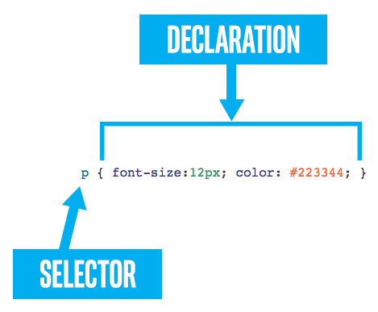

列表标记标记（[ul]、[ol]和[li]）是HTML中最常用的特定用途标记。有几个CSS样式的属性可用于列表。
list-style-type 列表样式类型属性
列表样式类型控制通常位于任何列表项左侧的小列表标记。
对于未排序列表（[ul]），有几个常用值：disc、circle、square和none。
| html |
default |
disc |
circle |
square |
none |
| |
默认样式 |
圆点 |
圆圈 |
方形点 |
没有 |
[ul]
[li]eggs[/li]
[li]milk[/li]
[li]bread[/li]
[ul] |
|
|
|
|
|
对于有序列表（[ol]），您可以选择不同的方式显示数字：十进制(decimal)、十进制前导零(decimal-leading-zero)、小写罗马（lower-roman）、大写罗马（upper-roman）、小写字母（lower-alpha）、大写字母（upper-alpha），以及几种世界语言：亚美尼亚语（armenian）、格鲁吉亚语(georgian)、中文(simp-chinese-formal)和其他许多语言。
| HTML |
decimal |
decimal-leading-zero |
lower-roman |
upper-alpha |
simp-chinese-formal |
armenian |
| |
十进制 |
十进制前导零 |
小写罗马 |
大写字母 |
中文 |
美尼亚语 |
[ul]
[li]eggs[/li]
[li]milk[/li]
[li]bread[/li]
[ul]
|
- eggs
- milk
- bread
|
- eggs
- milk
- bread
|
- eggs
- milk
- bread
|
- eggs
- milk
- bread
|
- eggs
- milk
- bread
|
- eggs
- milk
- bread
|
list-style-position 列表样式位置属性
除了选择应用于每个列表项的标记类型外，还可能需要控制它与列表本身的距离。“列表样式位置”属性可处理该问题。这两个值是inside和outside。它们控制标记是放置在列表框的内部还是外部。如果将边框、背景或类似内容应用于列表，则这一点最为明显。下面，我们在列表上加了一个蓝色边框。
list-style-image 列表样式图片属性
列表上的小标记也可以自定义为您选择的图像。这将要求您拥有一个与Web兼容格式（建议使用PNG或JPEG）的小图像，并知道从定义CSS的位置到图像的路径。模块2中介绍了图像路径名，我们将在背景图像部分再次讨论它们。
| list-style-image |
- eggs
- milk
- bread
|
请注意，浏览器只会绘制图像。无法保证缩放图像或辅助间距或对齐。许多用户觉得列表样式的图像令人沮丧，因此使用了具有更多选项的背景图像CSS属性。有一个部分专门用于“背景图像”属性。
3.4.2选择器

前面，我们了解到CSS规则由两部分组成：选择器和声明。我们已经看到了很多不同的声明，但我们学到的唯一选择器是标记选择器。还有其他选择，它们可以以有趣和有用的方式组合在一起。让我们学习更多的CSS选择器。
tag selector 标签选取器
我们已经看过这个了。仅由单个标记（无标点或空格）组成的CSS选择器将应用于页面上的任何匹配标记。
id selector id选择器
您可能还记得id属性（identifier的缩写）。此属性可以应用于HTML标记以唯一标识元素。回想一下，任何给定id属性的值在文档中只能出现一次。不允许两个标记具有相同的id。您可能还记得，id不能包含空格、大多数标点符号，也不能以数字开头。
在下面的HTML中，有两个段落标记。因此，为了单独设置样式，我们可以对段落应用唯一的id属性（id=“p18”和id=“p19”）。在CSS中，我们将使用id选择器。id选择器只是一个哈希符号（#），后跟id。
class selector
class属性类似于id。然而，尽管id必须是唯一的和单数的，但class属性的值可以由多个标记共享。而且，只需用空格将多个类分隔开，就可以为一个标记分配多个类。
能够根据标记、类或id定义CSS选择器是非常强大的。但在文档中的每个标记上放置类是不现实的，更不用说在整个文档中放置唯一的ID了。不断重复CSS规则也很不方便。但通过组合组合选择器，所有这些都可以避免。
Comma separated selectors 逗号分隔选择器
假设我们想将所有的[blockquote]标签、[q]标签以及类字符串中带有“speech”的任何内容都做成红色斜体文本。我们该怎么做？我们可以创建三个单独的规则集。或者，更好的是，我们可以在一个规则集之前用逗号（，）分隔选择器。像这样：
| separate 分离 |
joined 集合 |
blockquote {
color: red;
font-style: italic;
}
q {
color: red;
font-style: italic;
}
.speech {
color: red;
font-style: italic;
} |
blockquote,
q,
.speech {
color: red;
font-style: italic;
} |
右侧的连接版本更易于阅读和维护。
如果“speech”项目也需要加粗，只需通过附加规则添加即可：
Specialized selectors 专用选择器
如果两个不同类型的选择器（如tag和class）相邻出现，并且没有空格分隔它们，则它们构成专用选择器。要匹配，候选人必须同时匹配这两条规则。如果使用标记选择器，它必须首先出现。
这对于类和标记选择器非常有用，例如：
在上面的示例中，blockquote.speech选择器是一个blockquote标记选择器，与.speech选择器。因此，这条规则不一定适用于每个blockquote，也不一定适用于speech类的每个元素。相反，它只适用于那些也有speech类的blockquotes标记。
以这种方式连接多个类也很常见：
Descendant selectors 使用子选择器
在下面的HTML中，我们看到一些段落中有一些链接（[a]）。链接标记位于段落内，但不一定是直接子项。
如果我们希望介绍部分中的所有链接都是红色的，而指南部分中的所有链接都是绿色的，那该怎么办？这就是后代选择器的用途。下面是我们面临的问题的一个例子：
我们仅仅用空格分隔标记、标识符或类选择器。
因此，在第一条规则中，我们看到选择器将与#intro的后代的任何[a]标记相匹配。标签可以直接出现在#intro中，也可以隐藏在子项中。结果如下：
但是，如果我们想让简介部分的创始人区块引述中的链接加粗怎么办？同样，子代选择器也可以工作。我们添加以下内容：
#intro简介部分中[blockquote]任何位置的任何[a]标记现在都将加粗。
Direct descendant selectors ( > ) 直接后代选择器（>）
有时，您不想将样式应用于任何可能的子对象，而只想应用于直接子对象。这可以使用>符号完成。在选择器之间使用它可以将应用程序限制为父级的直接子级。例如，如果将此规则应用于上一个选择器的HTML，则会导致简介部分中的链接变大，但不会导致任何嵌套引号或块引号中的链接变大
Everything selector (*)所有内容选择器（*）
星号（*）可用于匹配任何标记。就其本身而言，这只是略微有用。但与其他选择器组合成后代选择器时，它可能非常有用。
继承 Inheritance
现在我们已经介绍了定义CSS选择器的几种方法，我们需要了解当多个选择器解析到同一个元素时会发生什么，以及一个元素如何从其父元素获取继承规则。
还记得我们说过“现在不要担心‘级联’部分…”在本模块开始时？好吧，那是过去，这是现在。从现在起，您需要担心级联。
大多数CSS规则一旦应用于一个元素，也会应用于该元素的所有子元素，以及它们的子元素和无限的子元素。也有例外，尤其是布局属性（边距、填充、位置、宽度等）和装饰属性（边框、背景等）不层叠。CSS属性从父级到子级的级联也称为“继承”。
一般来说，继承是一件好事。是否希望整个页面使用公司认可的Web字体？
正文{字体系列：“无灵魂”，衬线；}这就是你所需要的。无需对页面中使用的每个标记应用相同的字体族属性。谢谢你，级联！
然而，有时继承可能是一件坏事。一个元素可能会突然以您意想不到的方式显示，并且您无法找到该元素的任何相关CSS规则。在这种情况下，一个可能的罪魁祸首是从父级继承的CSS规则。谢谢，级联！
可以显式利用继承。许多CSS属性接受inherit的值，这意味着从父级继承该值。通过巧妙地利用inherit，您可以减少CSS规则中的重复，并使项目更易于维护。
在下面的示例中，我们看到了一段关于孩子和孙子的内容。CSS规则应用于将字体系列设置为单空格的段落，填充设置为40像素。请注意，在结果中，字体族应用于所有子项，而填充仅应用于段落本身，其子项都不会继承填充。
讨论：
在右边，我们添加了另一个CSS规则，该规则指示span和q元素的填充应该从其父元素继承。看右边的结果，填充非常明显。
哪些规则是可继承的？
对于哪些CSS属性默认可继承，哪些不可继承，没有可靠的规则。但是，通常不会继承与定位和布局关联的属性。同样，装饰特性（边框、背景图像等）也不会继承。大多数以文本或字体开头的属性继承。
优先级
可以很容易地将多个不同的CSS规则应用于同一个元素。这通常是有利的，因为大多数CSS属性彼此正交，这意味着它们不会相互干扰。这使我们可以自由地按照规则组织CSS属性，以使我们作为开发人员有意义，因为我们知道它们可以很好地组合。例如，一段文字可以按一条规则倾斜，按另一条规则加粗，按第三条规则加下划线。如果我们不方便的话，我们不必把所有这些财产放在一个地方。
但是，如果有不同的规则竞争为同一属性设置不同的值，会发生什么情况？这就是CSS优先级发挥作用的地方。呈现CSS时，浏览器会遵循一些准则来解决冲突规则。以下是大致的总结，顺序如下：
1-最具体的规则
更具体的规则优先于不太具体的规则。将应用比一般规则更紧密地匹配特定元素的规则。
在上面的示例中，这两个规则都试图为列表项内的范围设置范围颜色。然而，当发生冲突时，第二条规则将“获胜”（如本例中的颜色）。
2-#id选择器是最具体的
带有id选择器（例如#someid）的规则被认为比没有id的规则更具体。
3- .类选择器比标记选择器更具体
使用类选择器（例如someclass）的规则被认为比没有的规则更具体（但没有#id选择器那么具体，后者胜过一切）。
4-晚来的规则优先于早来的规则
本指南适用于具有相同选择器的两个CSS规则集。如果存在冲突，则适用后一条规则。
不要害怕
这些指导方针似乎相当简单，但情况很快就会变得相当棘手。例如，在这种情况下，我们应该期望什么颜色？
| HTML |
CSS |
[p class="forest"][span class="tree"]arbol[/span][/p] |
p.forest span { color: green; }
p span.tree { color: blue; } |
如果CSS规则的顺序颠倒了怎么办？这会有所不同吗？
如果这个问题似乎很难解决，不要担心。在下一节中，我们将介绍Chrome开发工具。您将看到如何使用浏览器本身中的工具来检查元素，并确切地看到继承、应用了哪些CSS规则和属性，以及它们的优先级是什么。
!重要的 ！important
因为多个CSS选择器可以解析为同一个元素，而且控制优先级的规则很复杂，所以您可能会不时遇到这样的情况，即您需要应用特定的CSS属性，并且无论发生什么情况，都希望它优先于所有其他属性！重要人物会这样做的。
感叹号是必需的，整个符号（！important）位于值之后分号（；）之前。
这似乎是一个很有吸引力的选择，但不建议使用它。一旦您开始使用它，那么您最终将与正在使用的各种规则发生冲突！重要的是，从这场冲突中无法逃脱。如果您在优先级方面有问题，最好的建议是直接修复它们，而不是使用！重要的